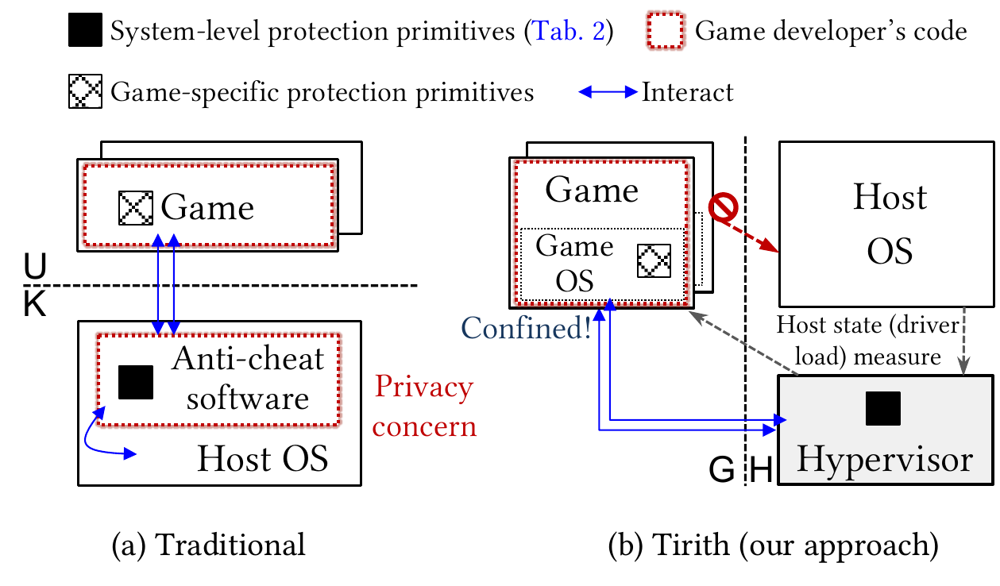

A User Privacy-Friendly Anti-Cheat Architecture for Personal Computers
Kernel-level anti-cheats effectively stop malicious player behavior in competitive games, but raise severe user privacy concerns by installing unverifiable components at privileged modes (Ring-0 in x86).
Tirith resolves this by sandboxing games inside Protected Virtual Machines (pVMs) without compromising cheating detection or rendering performance—making user privacy a first-class citizen on personal computers.
Comparing traditional kernel anti-cheat architecture against Tirith's VM-based sandboxing with split responsibility.

Overview of the VM-based sandboxing with split responsibility architecture (G: guest; H: host).
Even without kernel driver access on the host, Tirith does not compromise on security primitives:
While VM sandboxing solves host privacy and cheat isolation, standard virtualized gaming introduces severe performance bottlenecks:
Comparing traditional kernel-level anti-cheats against Tirith's Protected VM model.
| Security & Privacy Dimension | Traditional Ring-0 Anti-Cheat | 🛡️ Tirith (Protected VM) |
|---|---|---|
| Prevents Root Player Memory Tampering | Partial (Bypassed by Ring-0 cheats) | ✓ Hardware Isolated (pVM) |
| Prevents Kernel Cheat Driver Injection | Partial (Cat-and-mouse driver racing) | ✓ Hypervisor Verified |
| User Privacy & File System Protection | ✕ No (Unverifiable Ring-0 Driver) | ✓ Full Privacy (Zero Ring-0 Driver) |
| Game Code Modifications Required | None (Hooked at binary/driver level) | ✓ Zero Source Modification (Gramine LibOS) |
| Rootkit Attack Surface on Host System | High (Host Ring-0 execution) | ✓ Zero (Isolated guest Ring-0) |
egl-redirect):
Intercepts native glCreateContext calls during boot and redirects them to headless EGL backends, removing the requirement to run desktop display servers inside the pVM.
mremap) to support SDL-based Linux games inside Protected VMs without binary modifications.
ioctl system calls via lockless ring buffers, eliminating host-guest thread contention for multi-threaded game engines.
xcb_present with fence sync, while an offscreen dummy window redirects host input events (XSelectInput).
Frame rate (FPS) comparison across native Linux, baseline paravirtualized KVM, and Tirith.
| Workload | Native | Baseline | Tirith | % Native |
|---|---|---|---|---|
| Glxgears | 60.0 | 58.5 | 59.8 | 99.6% |
| Quake 2 | 142.0 | 131.0 | 135.5 | 95.4% |
| Supertuxkart | 128.0 | 116.0 | 120.1 | 93.8% |
| Minetest | 115.0 | 104.0 | 110.5 | 96.1% |
Common questions regarding performance overhead, threat boundaries, and compatibility.
Tirith decouples high-throughput 3D GPU command submission from display output. OpenGL/Vulkan draw calls run via direct GPU pass-through inside the guest LibOS, while offscreen frame buffers are zero-copy shared with the host compositor.
The guest LibOS environment is cryptographically measured and signed. Any guest-level tampering invalidates the hypervisor attestation token before the game client connects to online matchmaking servers.
Native OpenGL contexts are tightly coupled with desktop display servers (X11). Including a full display server inside a secure guest VM increases the attack surface and overhead. EGL allows headless offscreen rendering without guest display integration.
@inproceedings{narayanan2026tirith,
author = {Santosh Gokul Narayanan and Giovanni Paladino and Chuqi Zhang and Sangho Lee and Zhenkai Liang and Adil Ahmad},
title = {You Shall Not Pass into Ring-0! A User Privacy-Friendly Anti-Cheat Architecture for Personal Computers},
booktitle = {Proceedings of the 2026 ACM SIGSAC Conference on Computer and Communications Security (CCS '26)},
year = {2026},
location = {The Hague, The Netherlands},
publisher = {ACM}
}